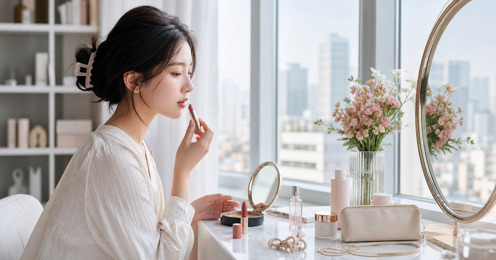

早上十分鐘也能整理好：唇膏、妝前保養與日系韓系美妝小物
把早晨儀容拆成唇色、底妝、眉眼和隨身補妝，十分鐘也能出門得體。

早上真正困難的不是少一支唇膏，而是時間太短、光線太急、桌面太亂。十分鐘儀容整理需要的不是完整妝容，而是一套固定順序：讓膚況看起來乾淨、唇色有精神、髮絲不凌亂，出門後還有簡單補妝的餘地。
先決定今天要被看見的重點
早晨時間有限，妝容最好只抓一個主角。會議日可以把唇色放前面，拍照日留意底妝與髮絲，外勤日則重視持妝、收納和補擦方便。
把重點縮小，反而更容易整理好。唇膏、粉餅、眉筆、髮夾和小鏡子只要固定放在同一個盤子或包內，早晨就不用重新找一輪。
如果辦公室光線偏白，早晨可以先在窗邊確認唇色和底妝邊界。自然光下看起來舒服，通常比浴室黃光下的濃度更適合白天。
- 會議日：唇色和眉眼乾淨。
- 拍照日：底妝和髮絲服貼。
- 外勤日：小包補妝與防曬補擦更重要。
妝前保養不要變成全套保養
早上的妝前保養重點是讓後續妝容服貼，不需要把夜間保養完整搬過來。清爽、好吸收、能和底妝相容，比堆很多層更實際。
如果膚況敏感或正在使用特殊保養品，早晨越應該簡化。任何成分效果、修復或改善宣稱，都應回到商品標示與個人狀況評估。
補妝包也需要定期清理。唇膏蓋、粉盒邊緣和小鏡子若長期沾染，會讓每天出門前的儀容感打折。
- 洗臉後先觀察膚況。
- 妝前品項越少越容易穩定。
- 新產品不要在重要日早上第一次使用。
Elite 嚴選
唇膏是最快的精神開關
唇色是十分鐘妝容裡最有效率的部分。日常通勤可選接近原唇色、氣色自然的色調；正式場合再提高一點飽和度。若要送禮，避免只憑流行色，先看對方平常穿搭和膚色偏好。
傳奇今生唇膏、K-Belle、韓國美妝精選、新幹線 JAPAN 與 KORENA 珂蕾娜，可以從唇彩、日韓彩妝與保養小物方向參考；請以商品頁色號、成分與使用說明為準。
送禮時則建議避開太個人化的底妝色號，改選唇彩、手部保養或實用小物，踩雷機率會低很多。
補妝包只放會用的五樣
隨身補妝包不需要把梳妝台搬出去。小鏡子、唇膏、吸油或面紙、髮夾、旅行尺寸保養或護手用品，通常已經足夠應付半天外出。
包內品項越少，越容易每天帶出門，也越不會忘記清理過期或沾染的產品。
如果早晨常常趕時間，可以把會用到的產品按順序排成一列，而不是全部放進抽屜。視線先看到的物品越少，越容易在有限時間內完成，也更容易維持乾淨。
- 小鏡子。
- 常用唇膏。
- 紙巾或吸油用品。
- 髮夾或髮圈。
- 小容量護手或保濕用品。
讓梳妝台每天晚上歸位
十分鐘儀容整理的關鍵，其實在前一晚。把會用的產品放回盤中，髮夾和唇膏不散落在包裡，隔天早上就能省下最混亂的幾分鐘。
美妝品涉及個人膚況與過敏風險，使用前請依商品標示與自身狀況評估；若有皮膚不適，應停止使用並尋求專業建議。
同主題品牌參考
FAQ
這篇文章適合直接照單購買嗎？
不建議。每個家庭、通勤路線、身形、膚況或空間條件都不同，請先用文中的順序盤點自己的使用情境，再回到商品頁確認規格。
商品價格、活動或庫存可以以本文為準嗎？
不可以。價格、活動、庫存、規格、尺寸與配送條件都可能變動，請以下單前看到的商品頁或店家頁公告為準。
涉及保養、照護、兒童或健康用品時要注意什麼？
請把本文視為一般生活整理與選購情境參考；若涉及健康、照護、皮膚、兒童食用或輔具使用，應優先看商品標示並諮詢合格專業人員。
下一步建議
先固定早晨會用的五樣小物，再依通勤、會議與外勤日補上合適美妝選擇。
重要警語
本文僅供一般美妝與生活整理參考，不構成醫療或皮膚治療建議；商品成分、色號與適用資訊請以商品頁公告為準。
本文含品牌／商品導購連結；若你透過部分商品連結前往選購，Elite Fashion 可能取得合作收益。本文仍以編輯判斷與使用情境整理為主，價格、規格、活動與庫存請以商品頁公告為準。